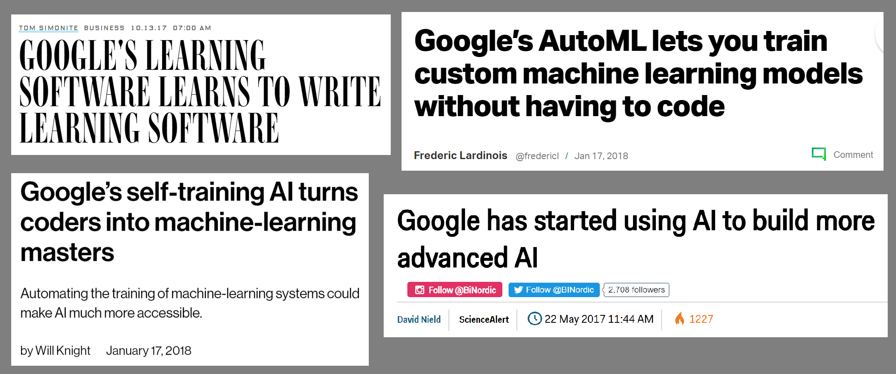

This is part 3 in a series. Part 1 is here and Part 2 is here.
To announce Google’s AutoML, Google CEO Sundar Pichai wrote, “Today, designing neural nets is extremely time intensive, and requires an expertise that limits its use to a smaller community of scientists and engineers. That’s why we’ve created an approach called AutoML, showing that it’s possible for neural nets to design neural nets. We hope AutoML will take an ability that a few PhDs have today and will make it possible in three to five years for hundreds of thousands of developers to design new neural nets for their particular needs.” (emphasis mine)

When Google’s Head of AI, Jeff Dean, suggested that 100x computational power could replace the need for machine learning expertise, computationally expensive neural architecture search was the only example he gave to illustrate this point. (around 23:50 in his TensorFlow DevSummit keynote)
This raises a number of questions: do hundreds of thousands of developers need to “design new neural nets for their particular needs” (to quote Pichai’s vision), or is there an effective way for neural nets to generalize to similar problems? Can large amounts of computational power really replace machine learning expertise?
In evaluating Google’s claims, it’s valuable to keep in mind Google has a vested financial interest in convincing us that the key to effective use of deep learning is more computational power, because this is an area where they clearly beat the rest of us. If true, we may all need to purchase Google products. On its own, this doesn’t mean that Google’s claims are false, but it’s good be aware of what financial motivations could underlie their statements.
In my previous posts, I shared an introduction to the history of AutoML, defined what neural architecture search is, and pointed out that for many machine learning projects, designing/choosing an architecture is nowhere near the hardest, most time-consuming, or most painful part of the problem. In today’s post, I want to look specifically at Google’s AutoML, a product which has received a lot of media attention, and address the following:
- What is Google’s AutoML?
- What is transfer learning?
- Neural architecture search vs. transfer learning: two opposite approaches
- In need of more evidence
- Why all the hype about Google’s AutoML?
- How can we address the shortage of machine learning expertise?
What is Google’s AutoML?
Although the field of AutoML has been around for years (including open-source AutoML libraries, workshops, research, and competitions), in May 2017 Google co-opted the term AutoML for its neural architecture search. In blog posts accompanying announcements made at the conference Google I/O, Google CEO Sundar Pichai wrote, “That’s why we’ve created an approach called AutoML, showing that it’s possible for neural nets to design neural nets” and Google AI researchers Barret Zoph and Quoc Le wrote “In our approach (which we call”AutoML”), a controller neural net can propose a “child” model architecture…“
Google’s Cloud AutoML was announced in January 2018 as a suite of machine learning products. So far it consists of one publicly available product, AutoML Vision, an API that identifies or classifies objects in pictures. According to the product page, Cloud AutoML Vision relies on two core techniques: transfer learning and neural architecture search. Since we’ve already explained neural architecture search, let’s now take a look at transfer learning, and see how it relates to neural architecture search.

Note: Google Cloud AutoML also has a drag-and-drop ML product that is still in alpha. I applied for access to it over 2 months ago, but I have not heard back from Google yet. I plan to write a post once it’s released.
What is transfer learning?
Transfer learning is a powerful technique that lets people with smaller datasets or less computational power achieve state-of-the-art results, by taking advantage of pre-trained models that have been trained on similar, larger data sets. Because the model learned via transfer learning doesn’t have to learn from scratch, it can generally reach higher accuracy with much less data and computation time than models that don’t use transfer learning.
Transfer learning is a core technique that we use throughout our free Practical Deep Learning for Coders course– and that our students have been applying in production in everything from their own startups to Fortune 500 companies. Although transfer learning seems to be considered “less sexy” than neural architecture search, it is being used to achieve ground-breaking academic results, such as in Jeremy Howard and Sebastian Ruder’s application of transfer learning to NLP, which achieved state-of-the-art classification on 6 datasets and is serving as a basis for further research in this area at OpenAI.
Neural architecture search vs. transfer learning: two opposing approaches
The underlying idea of transfer learning is that neural net architectures will generalize for similar types of problems: for example, that many images have underlying features (such as corners, circles, dog faces, or wheels) that show up in a variety of different types of images. In contrast, the underlying idea of promoting neural architecture search for every problem is the opposite: that each dataset has a unique, highly specialized architecture it will perform best with.
When neural architecture search discovers a new architecture, you must learn weights for that architecture from scratch, while with transfer learning, you begin with existing weights from a pre-trained model. In this sense, you you can’t use neural architecture search and transfer learning on the same problem: if you’re learning a new architecture, you would need to train new weights for it; whereas if you are using transfer learning on a pretrained model, you can’t make substantial changes to the architecture.
Of course, you can apply transfer learning to an architecture learned through neural architecture search (which I think is a good idea!). This requires only that a few researchers use neural architecture search and open-source the models that they find. It is not necessary for all machine learning practitioners to be using neural architecture search themselves on all problems when they can instead use transfer learning. However, Jeff Dean’s keynote, Sundar Pichai’s blog post, Google Cloud’s promotional materials, and the media coverage all suggest the opposite: that everybody needs to be able to use neural architecture search directly.
What Neural Architecture Search is good for
Neural architecture search is good for finding new architectures! Google’s AmoebaNet was learned via neural architecture search, and (with the inclusion of fast.ai advances such as an aggressive learning schedule and changing the image size as training progresses) is now the cheapest way to train ImageNet on a single machine!
AmoebaNet was not designed with a reward function that involved the ability to scale, and so it didn’t scale as well as ResNet to multiple machines, but a neural net that scales well could potentially be learned in the future, optimized for different qualities.
In need of more evidence
We haven’t seen evidence that every dataset would be best modeled with its own custom model, as opposed to instead fine-tuning an existing model. Since neural architecture search requires a larger training set, this would particularly be an issue for smaller data sets. Even some of Google’s own research uses transferable techniques instead of finding a new architecture for each data set, such as NASNet (blog post here), which learned an architectural building block on Cifar10 and then used that building block to create an architecture for ImageNet. I don’t know of any widely-entered machine learning competitions that have been won using neural architectures search yet.
Furthermore, we don’t know that the mega-computationally expensive approach to neural architecture search that Google touts is the superior approach. For instance, more recent papers such as Efficient Neural Architecture Search (ENAS) and
Differentiable architecture search (DARTS) propose significantly more efficient algorithms. DARTS takes just 4 GPU days, compared to 1800 GPU days for NASNet and 3150 GPU days for AmoebaNet (all learned to the same accuracy on Cifar-10). Jeff Dean is an author on the ENAS paper, which proposed a technique that is 1000x less computationally expensive, which seems inconsistent with his emphasis at the TF DevSummit one month later on using approaches that are 100x more computationally expensive.
Then why all the hype about Google’s AutoML?
Given the above limitations, why has Google AutoML’s hype been so disproportionate to its proven usefulness (at least so far)? I think there are a few explanations:
Google’s AutoML highlights some of the dangers of having an academic research lab embedded in a for-profit corporation. There is a temptation to try to build products around interesting academic research, without assessing if they fulfill an actual need. This is also the story of many AI start-ups, such as MetaMind or Geometric Intelligence, that end up as acquihires without ever having produced a product. My advice for startup founders is to avoid productionizing your PhD thesis and to avoid hiring only academic researchers.
Google excels at marketing. Artificial intelligence is seen as an inaccessible and intimidating field by many outsiders, who don’t feel that they have a way to evaluate claims, particularly from lionized companies like Google. Many journalists fall prey to this as well, and uncritically channel Google’s hype into glowing articles. I periodically talk to people that do not work in machine learning, yet are excited about various Google ML products that they’ve never used and can’t explain anything about.
One example of Google’s misleading coverage of its own achievements occurred when Google AI researchers released “a deep learning technology to reconstruct the true human genome”, compared their own work to Nobel prize-winning discoveries (the hubris!), and the story was picked up by Wired. However, Steven Salzberg, a distinguished professor of Biomedical Engineering, Computer Science, and Biostatistics at Johns Hopkins University debunked Google’s post. Salzberg pointed out that the research didn’t actually reconstruct the human genome and was “little more than an incremental improvement over existing software, and it might be even less than that.” A number of other genomics researchers chimed in to agree with Salzberg.
There is some great work happening at Google, but it would be easier to appreciate if we didn’t have to sift through so much misleading hype to figure out what is legitimate.
Google’s DeepVariant “is little more than an incremental improvement over existing software, and it might be even less than that.” @StevenSalzberg1
What do others genomics researchers think?https://t.co/vaAECQhvSi— Rachel Thomas (@math_rachel) December 12, 2017
Google has a vested interest in convincing us that the key to effective use of deep learning is more computational power, because this is an area where they clearly beat the rest of us. AutoML is often very computationally expensive, such as in the examples of Google using 450 K40 GPUs for 7 days (the equivalent of 3150 GPU days) to learn AmoebaNet.
While engineers and the media often drool over bare-metal power and anything bigger, history has shown that innovation is often birthed instead by constraint and creativity. Google works on the biggest data possible using the most expensive computers possible; how well can this really generalize to the problems that the rest of us face living in a constrained world of limited resources?
Innovation comes from doing things differently, not from doing things bigger. The recent success of fast.ai in the Stanford DAWNBench competition is one example of this.
Innovation come from doings things differently, not doing things bigger. @jeremyphoward https://t.co/3TJYs8OCbr pic.twitter.com/I55a6gT1OF
— Rachel Thomas (@math_rachel) May 2, 2018
How can we address the shortage of machine learning expertise?
To return to the issue that Jeff Dean raised in his TensorFlow DevSummit keynote about the global shortage of machine learning practitioners, a different approach is possible. We can remove the biggest obstacles to using deep learning in several ways by:
- making deep learning easier to use
- debunking myths about what it takes to do deep learning
- increasing access for people that lack the money or credit cards needed to use a cloud GPU
Making Deep Learning Easier to Use
Research to make deep learning easier to use has a huge impact, making it faster and simpler to train better networks. Examples of exciting discoveries that have now become standard practice are:
- Dropout allows training on smaller datasets without over-fitting.
- Batch normalization allows for faster training.
- Rectified linear units help avoid gradient explosions.
Newer research to improve ease of use includes: - The learning rate finder makes the training process more robust. - Super convergence speeds up training, requiring fewer computational resources. - “Custom heads” for existing architectures (e.g. modifying ResNet, which was initially designed for classification, so that it can be used to find bounding boxes or perform style transfer) allow for easier architecture reuse across a range of problems.
None of the above discoveries involve bare-metal power; instead, all of them were creative ideas of ways to do things differently.
Address Myths About What it Takes to Do Deep Learning
Another obstacle is the many myths that cause people to believe that deep learning isn’t for them: falsely believing that their data is too small, that they don’t have the right education or background, or that their computers aren’t big enough. One such myth says that only machine learning PhDs are capable of using deep learning, and many companies that can’t afford to hire expensive experts don’t even bother trying. However, it’s not only possible for companies to train the employees they already have to become machine learning experts, it’s even preferable, because your current employees already have domain expertise for the area you work in!
For the vast majority of people I talk with, the barriers to entry for deep learning are far lower than they expected: one year of coding experience and access to a GPU.
Increasing Access: Google Colab Notebooks
Although the cost of cloud GPUs (around 50 cents per hour) are within the budgets of many of us, I’m periodically contacted by students from around the world that can’t afford any GPU use at all. In some countries, rules about banking and credit cards can make it difficult for students to use services like AWS, even when they have the money. Google Colab notebooks are a solution! Colab notebooks provide a Jupyter notebook environment that requires no setup to use, runs entirely in the cloud, and gives users access to a free GPU (although long-running GPU use is not allowed). They can also be used to create documentation that contains working code samples running in an interactive environment. Google colab notebooks will do much more to democratize deep learning than Google’s AutoML will; perhaps this would be a better target for Google’s marketing machine in the future.
If you haven’t already, check out Part 1: What is it that machine learning practitioners do? and Part 2: An Opinionated Introduction to AutoML Neural Architecture Search of this series.